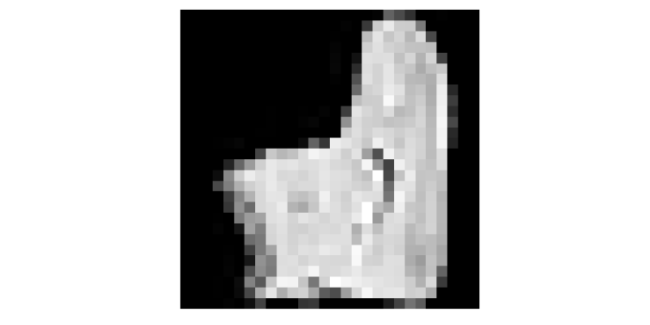
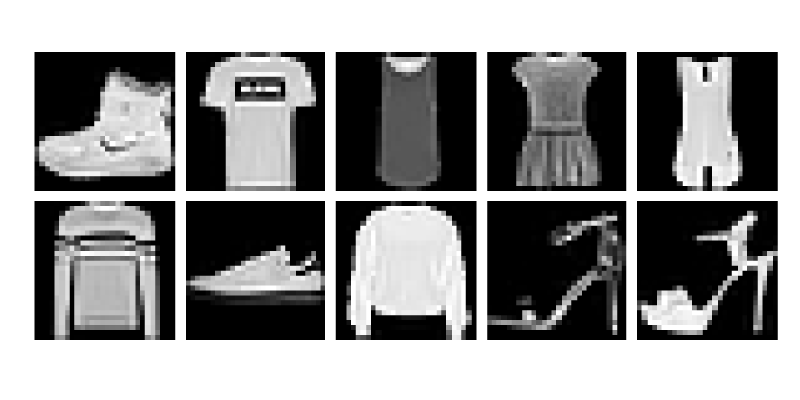

Package development
The cool thing about Julia is the simplicity of creating packages and sharing them with others. This section contains a step-by-step tutorial on how to build a package from scratch. Moreover, we will use this package later in the course.
Pkg templates
We first generate an empty package PackageName by the built-in function generate in the Pkg REPL.
(@v1.5) pkg> generate PackageName
Generating project PackageName:
PackageName/Project.toml
PackageName/src/PackageName.jlThis way generates the new package in the working directory. However, we may also specify an absolute or relative path to generate it elsewhere. The generate function creates a new folder (with the name matching the package name) with the following content.
├── Project.toml
└── src
└── PackageName.jlThe new package consists of the Project.toml file and the src folder with one .jl file. The src/PackageName.jl file contains a module PackageName. The package, the .jl file, and the module share the same name. Since we will modify multiple files during this lecture, we will often specify which file we work with.
# /src/PackageName.jl
module PackageName
greet() = print("Hello World!")
end # moduleSince the generate function creates an empty package, the Project.toml contains only information describing the package name, its unique UUID, version, and author list.
name = "PackageName"
uuid = "fa38fd22-11d6-48c8-ae38-ef06258216d8"
authors = ["Author Name"]
version = "0.1.0"Since the Project.toml file src/*.jl files are sufficient for determining a package, packages are modules with their own environment.
The built-in generate function provides only basic functionality for generating packages. Even though it is sufficient in many cases, the PkgTemplates package offers a straightforward and customizable way for creating packages.
The goal of this exercise is to create a new package by the PkgTemplates package. Install PkgTemplates and then use the following code to generate a new package template.
using PkgTemplates
template = Template(;
user = "GithubUserName", # github user name
authors = ["Author1", "Author2"], # list of authors
dir = "/Path/To/Dir/", # dir in which the package will be created
julia = v"1.5", # compat version of Julia
plugins = [
!CompatHelper, # disable CompatHelper
!TagBot, # disable TagBot
Readme(; inline_badges = true), # added readme file with badges
Tests(; project = true), # added Project.toml file for unit tests
Git(; manifest = false), # add manifest.toml to .gitignore
License(; name = "MIT") # addedMIT licence
],
)Do not forget to change user, authors and dir.
In the rest of the lecture, we will write code to visualize grayscale and colour images. Come up with a proper package name and use the following code to generate a new package.
template("PackageName")For naming conventions, see the official package naming guidelines. Finally, create the folder scripts in the main package folder.
Solution:
There is no best way to choose the correct package name. We decided to use ImageInspector and create the package by the following code:
template("ImageInspector")After creating the ImageInspector package, we can add the scripts folder manually or use the mkdir function to create it. For the latter, we use the joinpath function to specify the correct path.
mkdir(joinpath("/Path/To/Dir/", "ImageInspector", "scripts"))The generated folder contains more files than the folder generated by the built-in generate function.
├── .git
├── .gitignore
├── LICENSE
├── Manifest.toml
├── Project.toml
├── README.md
├── scripts
├── src
│ └── ImageInspector.jl
└── test
├── Manifest.toml
├── Project.toml
└── runtests.jlPkgTemplate provides an interactive way to generate a new package. The template can be created interactively by the following command:
Template(; interactive=true)The exercise above used a simple template. However, PkgTemplates provides many additional features to simplify the package generation process. Some plugins add documentation or integration with GitHub features. See the official PkgTemplates documentation for more information.
Development mode
In the previous section, we created a new empty package. In this section, we will fill the package with content. Before we continue, open the main folder of the ImageInspector package in a new VS Code window. One can access it from File -> Open folder.
The content of the ImageInspector folder can be divided into four parts:
- Root folder contains information about the package and git.
- Folder src contains the package source code.
- Folder tests contains the testing scripts for verifying the code correctness.
- Folder scripts is used to run scripts.
The first three are standard, while we added the last folder manually. We can add more folders, such as data.
We first activate a new environment in the script folder.
(ImageInspector) pkg> activate ./scripts
(scripts) pkg>Then we use the dev (or develop) command to tell Julia that the ImageInspector folder is a package, and we want to start its development. The important thing to realize is that the working directory is .../ImageInspector, while the working environment is .../ImageInspector/scripts. Since the dot in dev . specifies the working directory, this command will add the package from the working directory into the working environment.
julia> pwd()
.../ImageInspector
(scripts) pkg> dev . # or dev /absolute/or/relative/path/ImageInspector/
(scripts) pkg> st
Status `.../ImageInspector/scripts/Project.toml`
[5c9991e7] ImageInspector v0.1.0 `..`Like the add command, the dev command allows us to load the package by using or import. The difference between add and dev is that the dev command tracks the package current state and not a concrete git commit in some branch.
The VS Code allows setting a default Julia environment that is activated when Julia REPL is opened. We can do this by pressing Julia env: located at the bottom info bar and selecting the desired environment.
We now create a script /scripts/example.jl for testing the package functionality. In the rest of the lecture, we will use relative paths from the main folder of the ImageInspector package to specify the code location.
# /scripts/example.jl
using ImageInspectorJulia can load a package only once per Julia session. If we load a package by the using or import commands and then make changes in the code, these changes will not be reloaded. This holds even if we try to reload the package by running using or import again. For example, we add the greet function to the ImageInspector package.
# /src/ImageInspector.jl
module ImageInspector
export greet
greet() = print("Hello World!")
endSince we have already loaded the package, this change is not reloaded. If we call the greet function, we get the UndefVarError error.
julia> greet()
ERROR: UndefVarError: greet not definedIn this case, we have to restart Julia. There are two ways how to exit Julia interactive session: using keyword shortcut ctrl + D or using the exit() function. Even though we can use the greet() function after the restart, we will not do it yet. The reason is that we would have to restart Julia again after making any changes to the package. Since this is not a convenient way to code, we will use the Revise package. Even though it provides lots of convenient features, we will present only its basic use. First, we install it.
(scripts) pkg> add ReviseIf we develop a package and load the Revise package first, all package changes will be reloaded without restarting Julia.
# /scripts/example.jl
using Revise # this must come before `using ImageInspector`
using ImageInspector
greet()Hello World!We now add the greet2 function.
# /src/ImageInspector.jl
module ImageInspector
export greet, greet2
greet() = print("Hello World!")
greet2() = print("Hello World!!!!")
endSince we are using the Revise package, it should be possible to call the greet2 function without restarting Julia session.
julia> greet2()
Hello World!!!!Adding content 1
This section adds content to the package.
This exercise defines the image function that converts a matrix of real numbers to a matrix of Gray points. Real numbers can be converted to Gray points by the Gray constructor from the Colors package. Use the following code to test the function.
# /scripts/example.jl
using Revise # this must come before `using ImageInspector`
using ImageInspector, MLDatasets, Plots
x = FashionMNIST.traintensor(1);
plot(image(x); axis = nothing, border = :none)Hint: Each Julia package contains its environment for tracking package dependencies. Use proper commands in the Pkg REPL to add Colors as a dependency of the ImageInspector package. Do not forget to add MLDataset and Plots to the scripts environment.
Solution:
First, we need to install all necessary packages. Since we set the scripts environment as the default one for this project, we first install MLDataset and Plots.
(scripts) pkg> add MLDatasets PlotsSince we want to add the image function to the ImageInspector package, we have to install the Colors package. However, we do not want to add it to scripts but to ImageInspector. Printing the working directory by pwd(), we realize that we are in the correct folder and activate the working environment by activate . The dot represents the current working directory.
julia> pwd()
".../ImageInspector"
(scripts) pkg> activate .
Activating environment at `/path/ImageInspector/Project.toml`Now we use add Colors to install the Colors package.
(ImageInspector) pkg> add ColorsSince we want to work in scripts, we change the environment back.
(ImageInspector) pkg> activate /scripts
(scripts)With the Colors package installed, we have to add using Colors into the ImageInspector module. Then we can define the image function and export it.
# /src/ImageInspector.jl
module ImageInspector
using Colors
export image
image(x::AbstractMatrix{<:Real}) = Gray.(x)
end
The previous exercise used the MLDatasets package that provides many well-known datasets used in machine learning. One of them is the FashionMNIST dataset of gray images of clothes. However, the resulting image is rotated 90 degrees. The reason is that images in the FashionMNIST dataset are stored in the width x height format, but the Plots package assumes the height x width format. We solve this issue by redefining the image function.
function image(x::AbstractMatrix{T}; flip = true) where {T <: Real}
xx = flip ? PermutedDimsArray(x, (2, 1)) : x
return Gray.(xx)
endIn the definition of image, we use PermutedDimsArray that creates a permuted view without making a copy. There is also the permutedims function that does the same but creates a copy. Now we plot both images.
# /scripts/example.jl
plot(
plot(image(x; flip = true); title = "flip = true"),
plot(image(x; flip = false); title = "flip = false");
axis = nothing,
border = :none,
)
The image function also used AbstractMatrix to specify that the input must be a matrix. In general, we can specify the types of multi-dimensional input arrays in multiple ways:
AbstractArrayspecifies that the input must be an array.AbstractArray{T}specifies that the input must be an array with elements of typeT.AbstractArray{T, N}specifies that the input must be an array of dimensionNwith elements of typeT.AbstractMatrixorAbstractMatrix{T}is equivalent toAbstractArraywithN=2.AbstractVectororAbstractVector{T}is equivalent toAbstractArraywithN=1.
We will now extend the image function to three-dimensional inputs. The third dimension represents the colour channels.
Write a method for the image function that converts a 3D array of real numbers to its image representation. Assume that the third dimension represents the colour channels. Three channels should be converted to an RGB point extracting the RGB channels and RGB.(r, g, b). If the size of the third dimension is:
1the function should return a grayscale image,3the function should return a colour image,- otherwise, the function should throw an error.
Use the following code to test the image function.
# /scripts/example.jl
x1 = FashionMNIST.traintensor(1);
x2 = CIFAR10.traintensor(2);
plot(
plot(image(x1)),
plot(image(x2));
axis = nothing,
border = :none
)Hint: use the eachslice function to split the array along the third dimension and the dropdims function to drop a dimension slice.
Solution:
The functionality depends on the size of the third dimension.
- If the size of the third dimension is 1, we use the
dropdimsto remove the third dimension. Then we call theimagemethod from the previous exercise. - If the dimension size is 3, we use
PermutedDimsArrayifflipis true. We can extract the three channels manually, or we can use theeachslicefunction. - Otherwise, we throw an
ArgumentError.
Altogether, the new method can be defined as follows.
# /src/ImageInspector.jl
function image(x::AbstractArray{T,3}; flip = true) where {T <: Real}
s = size(x, 3)
if s == 1
return image(dropdims(x; dims = 3); flip)
elseif s == 3
xx = flip ? PermutedDimsArray(x, (2, 1, 3)) : x
r, g, b = eachslice(xx; dims=3)
return RGB.(r, g, b)
else
throw(ArgumentError("unsupported size of the third dimension $(s) ∉ [1,3]."))
end
end
Multiple images are usually stored in multi-dimensional arrays. For example, grayscale images are stored as 3D or 4D arrays, where the last dimension represents individual images. Similarly, colour images are stored as a 4D array.
Add new methods for the image function with the following properties:
- New methods should accept two arguments:
x: 3D or 4D array of real numbers that represents images,inds: one or more image indices to extract and convert to Gray/RGB representation.
- If only one index is provided, the method should return a single image in its representation.
- If more indices are provided, the method should return an array of images.
Use the following code to test the image function.
# /scripts/example.jl
x = FashionMNIST.traintensor(1:10);
plot(plot.(image(x, [1,2]))...; axis = nothing, border = :none)Solution:
We have four possible combinations of the input arguments:
- 3D array and one index,
- 3D array and multiple indices,
- 4D array and one index,
- 4D array and multiple indices.
We should, therefore, define a method for each combination of input arguments. We can do this in the following way:
# /src/ImageInspector.jl
image(x::AbstractArray{T,3}, inds; flip = true) where {T <: Real} = [image(x[:,:,i]; flip) for i in inds]
image(x::AbstractArray{T,4}, inds; flip = true) where {T <: Real} = [image(x[:,:,:,i]; flip) for i in inds]
image(x::AbstractArray{T,3}, ind::Int; flip = true) where {T <: Real} = image(x, [ind]; flip)[1]
image(x::AbstractArray{T,4}, ind::Int; flip = true) where {T <: Real} = image(x, [ind]; flip)[1]Since x[:,:,i] creates a new copy, it can be replaced by selectdim(x, 3, i), which creates a view.

Unit testing
The previous section added the image function with multiple methods. We also manually tested if these methods work correctly. Even though this practice works for small projects, it is not optimal for code testing and should be automized by unit testing. The Test package from the standard library provides utility functions to simplify writing unit tests. Its core is the @test macro that tests if an expression evaluates as true.
julia> using Test
julia> @test 1 == 1
Test Passed
julia> @test 1 == 3
Test Failed at none:1
Expression: 1 == 3
Evaluated: 1 == 3
ERROR: There was an error during testingIt is possible to pass additional arguments to the @test macro.
julia> @test π ≈ 3.14 atol=0.01
Test PassedIf we go back to our package, we can start writing tests for the methods of the image function. All tests should be located in the /test folder with its own environment. First, we have to import all necessary packages: Test, ImageInspector and Colors. Since we used PkgTemplates to generate the package, the test folder and the environment are both already generated. Moreover, the environment already contains the Test package. We do not have to add the ImageInspector package because it is added automatically. For simplicity, we use the environment from the scripts folder.
# /test/runtests.jl
using ImageInspector
using Test
using ImageInspector.ColorsWe import Colors from the ImageInspector to use the same version. Now we define inputs and expected outputs for the image function.
# /test/runtests.jl
x = [0.1 0.2; 0.3 0.4];
img = Gray.(x);
img_flipped = Gray.(x');Since the input to the image function is a matrix, we test the first method of the image function that creates grayscale images.
julia> @test image(x) == img_flipped
Test Passed
julia> @test image(x; flip = false) == img
Test Passed
julia> @test image(x; flip = true) == img_flipped
Test PassedSince all tests passed correctly, the message Test Passed is printed after each test. It is a good idea to group tests logically by the @testset macro.
# /test/runtests.jl
julia> @testset "image function" begin
@test image(x) == img_flipped
@test image(x; flip = false) == img
@test image(x; flip = true) == img_flipped
end
Test Summary: | Pass Total
image function | 3 3We use the begin ... end block to specify which tests should be grouped. Moreover, it is possible to combine the @testset macro and the for loop to perform multiple tests at once. For example, we may want to test the image function for different input images.
# /test/runtests.jl
x1 = [0.1 0.2];
x2 = [0.1 0.2; 0.3 0.4];
x3 = [0.1 0.2 0.3; 0.4 0.5 0.6];
x4 = [0.1 0.2; 0.3 0.4; 0.5 0.6];
x5 = [0.1, 0.2];In such a case, we use nested test sets to group all tests. This approach has the advantage that each iteration of the loop is treated as a separate test set.
julia> @testset "image function" begin
@testset "size(x) = $(size(x))" for x in [x1, x2, x3, x4, x5]
img = Gray.(x);
img_flipped = Gray.(x');
@test image(x) == img_flipped
@test image(x; flip = false) == img
@test image(x; flip = true) == img_flipped
end
end
size(x) = (2,): Error During Test
[...]
Test Summary: | Pass Error Total
image function | 12 3 15
size(x) = (1, 2) | 3 3
size(x) = (2, 2) | 3 3
size(x) = (2, 3) | 3 3
size(x) = (3, 2) | 3 3
size(x) = (2,) | 3 3
ERROR: Some tests did not pass: 12 passed, 0 failed, 3 errored, 0 broken.Not all tests passed. The reason is that the variable x5 is a vector. From the list of all methods defined for the image function, we see that there is no method for a vector.
julia> methods(image)
# 6 methods for generic function "image":
[1] image(x::AbstractArray{var"#s1",2} where var"#s1"<:Real) in ImageInspector at [...]
[2] image(x::AbstractArray{T,3}; flip) where T<:Real in ImageInspector at [...]
[3] image(x::AbstractArray{T,3}, ind::Int64; flip) where T<:Real in ImageInspector at [...]
[4] image(x::AbstractArray{T,3}, inds; flip) where T<:Real in ImageInspector at [...]
[5] image(x::AbstractArray{T,4}, ind::Int64; flip) where T<:Real in ImageInspector at [...]
[6] image(x::AbstractArray{T,4}, inds; flip) where T<:Real in ImageInspector at [...]If we pass a vector as an argument, the MethodError will appear. The Test package provides the @test_throw macro to test if the expression throws the correct exception.
julia> @test_throws MethodError image(x5)
Test Passed
Thrown: MethodErrorThe final testing file should be similar to the following one.
# /test/runtests.jl
using ImageInspector
using ImageInspector.Colors
using Test
@testset "ImageInspector.jl" begin
x1 = [0.1 0.2]
x2 = [0.1 0.2; 0.3 0.4]
x3 = [0.1 0.2 0.3; 0.4 0.5 0.6]
x4 = [0.1 0.2; 0.3 0.4; 0.5 0.6]
x5 = [0.1, 0.2]
@testset "size(x) = $(size(x))" for x in [x1, x2, x3, x4]
img = Gray.(x);
img_flipped = Gray.(x');
@test image(x) == img_flipped
@test image(x; flip = false) == img
@test image(x; flip = true) == img_flipped
end
@test_throws MethodError image(x5)
endThere is Project.toml and Manifest.toml files in the test folder. Creating a different environment has the advantage that it may contain packages needed only for testing. We can run tests directly from the Pkg REPL by the test command.
(scripts) pkg> test ImageInspector
Testing ImageInspector
Status `.../Project.toml`
[...]
Status `.../Manifest.toml`
[...]
Test Summary: | Pass Total
ImageInspector.jl | 13 13
Testing ImageInspector tests passedWriting documentation
Writing documentation is a good coding practice. It helps others to understand your code. It may even help the author after working on the code after an extended break. The most used documentation type is the docstring, a multiline string describing the functionality.
# /src/ImageInspector.jl
"""
image(x::AbstractMatrix{T}; flip = true)
Converts a matrix of real numbers to a matrix of `Gray` points. If the keyword argument
`flip` is true, the matrix is transposed.
# Example
```julia-repl
julia> x = [0.1 0.25; 0.4 0.6]
2×2 Array{Float64,2}:
0.1 0.25
0.4 0.6
julia> image(x)
2×2 Array{Gray{Float64},2} with eltype Gray{Float64}:
Gray{Float64}(0.1) Gray{Float64}(0.4)
Gray{Float64}(0.25) Gray{Float64}(0.6)
julia> image(x; flip = false)
2×2 Array{Gray{Float64},2} with eltype Gray{Float64}:
Gray{Float64}(0.1) Gray{Float64}(0.25)
Gray{Float64}(0.4) Gray{Float64}(0.6)
```
"""
function image(x::AbstractMatrix{T}; flip = true) where {T <: Real}
xx = flip ? PermutedDimsArray(x, (2, 1)) : x
return Gray.(xx)
endWe first wrote a function header, and then we used one tab as an indentation. Then we wrote a short description of the function. Finally, we wrote usage examples. To get a well-looking format of the docstring, we use markdown# Example to represents a title. We use the julia-repl block to write code. Now we type the function name into the Julia help.
help?> image
search: image imag
image(x::AbstractMatrix{T}; flip = true)
Converts a matrix of real numbers to a matrix of `Gray` points. If the keyword argument
`flip` is true, the matrix is transposed.
Example
≡≡≡≡≡≡≡≡≡
julia> x = [0.1 0.25; 0.4 0.6]
2×2 Array{Float64,2}:
0.1 0.25
0.4 0.6
julia> image(x)
2×2 Array{Gray{Float64},2} with eltype Gray{Float64}:
Gray{Float64}(0.1) Gray{Float64}(0.4)
Gray{Float64}(0.25) Gray{Float64}(0.6)
julia> image(x; flip = false)
2×2 Array{Gray{Float64},2} with eltype Gray{Float64}:
Gray{Float64}(0.1) Gray{Float64}(0.25)
Gray{Float64}(0.4) Gray{Float64}(0.6)Reports may be written externally in Latex. However, when we want to show some code, it may be advantageous to write them directly in Julia and export them to Jupyter notebooks. The Literate package allows combining Julia code with the Markdown syntax in a script. We mention the following code, which should be read with the soft wrapping on, as an example:
# # ImageInspector
# ImageInspector is a small package for educational purposes. Its main goal is not presenting functionality, but presenting package structure. This is its short documentation created in the package [Literate](https://fredrikekre.github.io/Literate.jl/v2) which uses the [Markdown](https://www.markdownguide.org/cheat-sheet) syntax.
# To use the package, we need to load first the required packages.
using ImageInspector
using Plots
# ## Grayscale images
# As a test example, we create the real matrix `img1` representing a circle. We first discretize the domain $[-1,1]$ in `xs`. We assign black colour whenever $x^2 + y^2 \le 1$. Since the white colour is represented by `[1; 1; 1]` and the black colour by `[0; 0; 0]`, we can do it by the following code:
xs = -1:0.001:1
img1 = [x^2+y^2>1 for x in xs, y in xs];
# This is a two-dimensional matrix, which represents a grayscale image. We convert it to an image by calling `image` and then we plot it.
plot(image(img1); axis = nothing, border = :none)
The Markdown syntax starts with #. Among others, it allows to use:
- Links such as
[Literate](https://fredrikekre.github.io/Literate.jl/v2). - Variables or latex syntax such as
$[-1,1]$.
Exporting the script into a notebook is simple.
julia> Literate.notebook("report.jl"; execute=false)The resulting notebook can be found at our Github. All required data are in the report folder.
Adding content 2
We will add more functions to the ImageInspector package. To plot multiple images at once, we will define two functions. The first one computes an optimal grid size for a given number of images.
# /src/ImageInspector.jl
function gridsize(n::Int; nrows::Int = -1, ncols::Int = - 1)
if nrows < 1
if ncols < 1
nrows = round(Int, sqrt(n))
ncols = ceil(Int, n / nrows)
else
nrows = ceil(Int, n / ncols)
end
else
ncols = ceil(Int, n / nrows)
end
return nrows, ncols
endThe second function consists of two methods and converts an array of real numbers to one big image of the appropriate colour type.
# /src/ImageInspector.jl
imagegrid(x, ind::Int; flip = true, kwargs...) = image(x, ind; flip)
function imagegrid(x, inds; flip = true, sep = 1, kwargs...)
imgs = image(x, inds; flip)
n = length(imgs)
nrows, ncols = gridsize(n; kwargs...)
h, w = size(imgs[1])
A = fill(
eltype(imgs[1])(1), # white color in proper color type
nrows*h + (nrows + 1)*sep, # height of the reculting image
ncols*w + (ncols + 1)*sep, # width of the reculting image
)
for i in 1:nrows, j in 1:ncols
k = j + (i - 1) * ncols
k > n && break
rows = (1:h) .+ (i - 1)*h .+ i*sep
cols = (1:w) .+ (j - 1)*w .+ j*sep
A[rows, cols] = imgs[k]
end
return A
endWe use the sep keyword argument to specify the separator width between images. With all functions defined, we can test them.
# /scripts/example.jl
x = FashionMNIST.traintensor(1:10);
plot(imagegrid(x, 1:10; nrows = 2, sep = 2); axis = nothing, border = :none)
We used the same settings for the plot function in all previous examples. Therefore, it makes sense to write an auxiliary function setting attributes for the plot function. However, this function will depend on the Plots package, and if we add Plots to ImageInspector, it will significantly slow the loading time. The Requires package prevents explicit dependencies (and long load times) by allowing conditional code loading. In our case, we first add Requires to the ImageInspector.
julia> pwd()
".../ImageInspector"
(scripts) pkg> activate .
Activating environment at `/path/ImageInspector/Project.toml`
(ImageInspector) pkg> add Requires
[...]
(ImageInspector) pkg> activate
(scripts)Then we create a new file /src/imageplot.jl with the following content:
# /src/imageplot.jl
using .Plots
export imageplot
imageplot(x; flip = true, kwargs...) = imageplot(image(x; flip); kwargs...)
function imageplot(x, ind; flip = true, nrows = -1, ncols = -1, sep = 1, kwargs...)
img = imagegrid(x, ind; flip, nrows, ncols, sep)
return imageplot(img; kwargs...)
end
function imageplot(
x::AbstractMatrix{<:Color};
legend = false,
axis = nothing,
border = :none,
kwargs...
)
return plot(x; legend, axis, border, kwargs...)
endWe only defined a wrapper function for the plot function and exported this function. We use a relative path to the Plots package. Then we specify on which package the code depends by defining the __init__() function in the /src/ImageInspector.jl file.
# /src/ImageInspector.jl
using Requires
function __init__()
@require Plots="91a5bcdd-55d7-5caf-9e0b-520d859cae80" include("imageplot.jl")
endThe __init__ function has to contain the @require macro followed by the package name and its unique UUID (can be found in the JuliaRegistries for public packages) and the code that should be included.
Now we can start a new Julia session and test if the loading works properly. If we do not load Plots, the imageplot function will not be available, as can be seen below.
julia> x = CIFAR10.traintensor(1:10);
julia> imageplot(x, 1:10; nrows = 2, sep = 2)
ERROR: UndefVarError: imageplot not definedAfter loading the Plots package, the imageplot function will start working.
julia> using Plots
julia> imageplot(x, 1:10; nrows = 2, sep = 1, background = RGB(184/255, 223/255, 250/255))